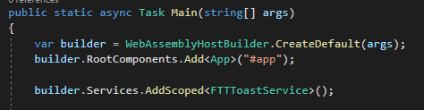
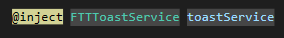
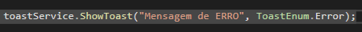

Toaster
Exemplo
Clicando nos botões abaixo a notifição vai abrir, ira sobrepor tudo atras da pagina.
Usando
Injeção no statup

Injeção na pagina

Codigo usado
Abaixo uma imagem de como implementar o dialog no seu sistema

Parametros do ShowToast
Message: Aqui passamos o texto que sera mostrado ao aparecer o toaster
ToastEnum: Aqui passamos o tipo da notificação